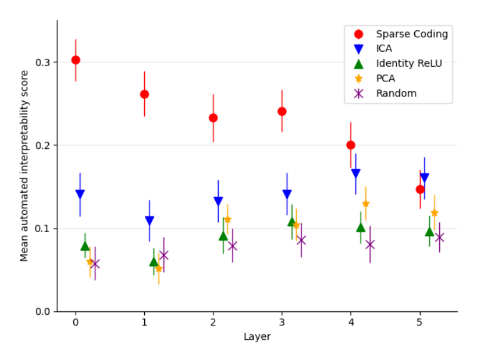

Interpretability score by layer: sparse coding vs. baselines

How to read this plot
Each point is the mean autointerpretability score for one decomposition method, computed over 150 features, at one residual-stream layer of the model; the vertical bar through each point is a 95% confidence interval around that mean, not a range of individual scores (individual feature scores, as table-1 shows, can be negative and vary widely even within one method). The x-axis is depth into the model (layers 0-5), and the y-axis is the same correlation-based Autointerpretability score used in table-1, so higher is better. Five methods are plotted at each layer: sparse coding (red), the paper's method; Independent Component Analysis (ICA), Principal Component Analysis (PCA), and Identity ReLU — the Default (neuron/residual-stream) basis baseline with negative activations zeroed — as fixed matrix-decomposition or neuron-basis baselines; and the Random directions baseline as a floor. A natural misreading is to treat the x-axis as tracking overall model capability or accuracy — it does not; it only tracks how interpretable each layer's chosen decomposition is.
What the plot shows
At layer 0, sparse coding scores clearly highest, well above ICA, which is itself well above PCA, Identity ReLU, and random, which cluster close together near the bottom. This gap between sparse coding and every baseline persists through the early-to-middle layers, but it is not constant: the paper reports that it narrows moving through the model, becoming comparable to ICA by layer 4, and showing minimal further improvement over ICA by the final layer plotted (sparse-autoencoders, §"3.2 SPARSE DICTIONARY FEATURES ARE MORE INTERPRETABLE THAN BASELINES", p. 5). Visually, by layer 5 the sparse-coding and ICA points sit close together, with PCA also having risen substantially from its layer-0 value, while random and Identity ReLU remain the weakest methods throughout.
Why the gap narrows
The paper offers two explanations for the shrinking advantage at later layers: later-layer features may be more complex because they build on everything before them, and are often best explained by their effect on the model's output rather than by the text that activates them — information the autointerpretability pipeline does not currently use. ICA's relative strength across layers is attributed separately to its optimizing directly for non-Gaussian, heavy-tailed activations, a property later shown to correlate with interpretability (see Interpretability-vs-kurtosis/skew correlation analysis).